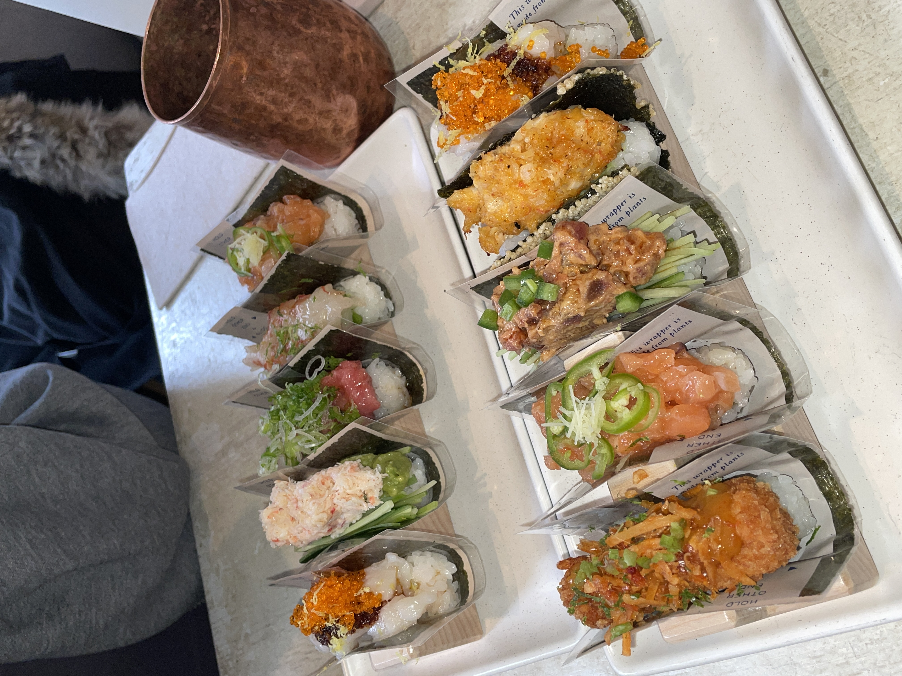
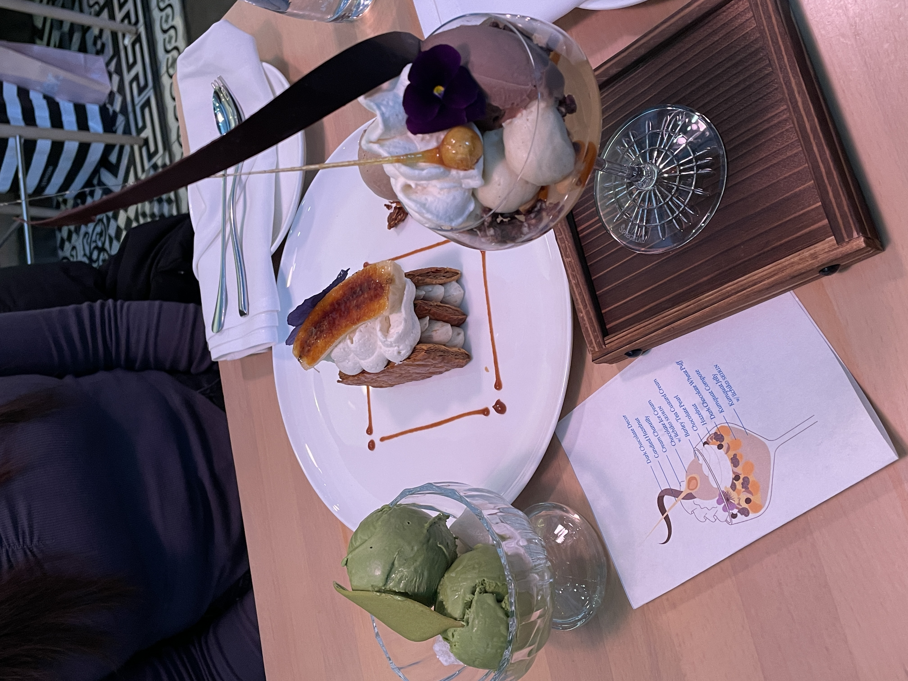
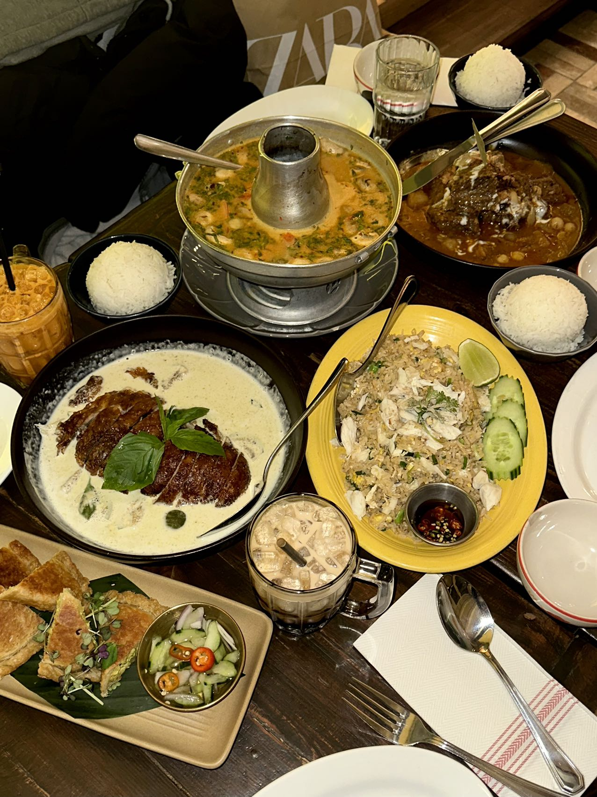

One of my favorite things to do when visiting New York City is trying out amazing restaurants. I love exploring different cuisines and unique dining experiences. Here are my top 3 favorite restaurants in NYC so far:
Nami Nori is my hands-down my favorite place for hand rolls. The crispy seaweed paired with flavorful fillings much more interesting. Both of us decided to choose our own rolls including some signature rolls and it was my first time trying it and it didn't disappoint. I highly recommend trying their spicy tuna and jalapeno salmon hand rolls. We were saving some space for desserts, but if I were to go again I would order at least 6 hand rolls for myself.
Momoya Soho is an incredible spot for sushi and Japanese cuisine. Their sushi selection is always fresh, and I've seen high ratings on yelp and beli so that's why I decided to try it. My friend and I decided to go for just desserts with their limited chef seaonal dessert menu because we were so full from nami nori earlier for lunch. These desserts looked so pretty and plating was amazing along with 10/10 flavors, I miss it already!
Pranakhon is my go to spot for authentic Thai food in NYC. The flavors are bold, the ingredients are fresh, and the atmosphere is great. If you're a fan of Thai cuisine, I highly recommend trying their curries and stir-fried dishes! I remember the first time I tried their yom yum soup, the taste was so perfect and I thought I transcended to Thailand for a few seconds. I was questioning my friends when they ordered the crispy pork belly with curry because it didn't look as good, but when I tasted it, it was so good that we had to order another plate.
